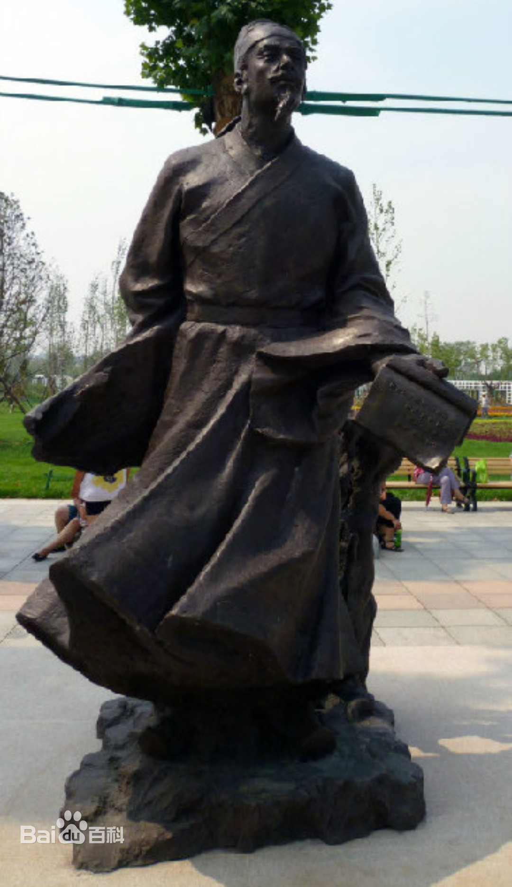

马致远
马致远（约1250年－1321年至1324年秋季间），号东篱，大都（今北京，有异议）人，元代戏曲作家、散曲家、散文家。与关汉卿、郑光祖、白朴并称“元曲四大家”。 [1] [75]
马致远出生在一个富有且有文化素养的家庭，年轻时热衷于求取功名，似曾向太子孛儿只斤·真金献诗并因此而曾为官，之后大概由于孛儿只斤·真金去世而离京任江浙行省务官，后在元贞年间（1295年初－1297年初）参加了“元贞书会”，晚年似隐居于杭州，最终病逝于至治元年（1321年）至泰定元年（1324年）秋季间。
戏曲创作方面，马致远在音乐思想上经历了由儒入道的转变，在散曲创作上具有思想内容丰富深邃而艺术技巧高超圆熟的特点，在杂剧创作上具有散曲化的倾向和虚实相生之美。
